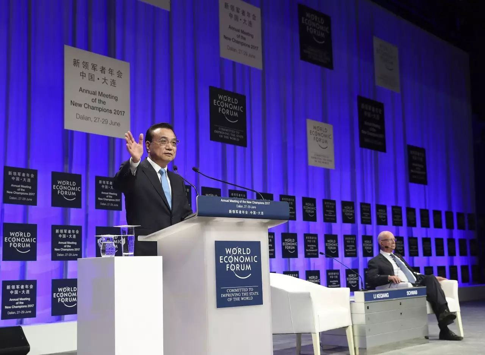

收录于合集

2017年夏季达沃斯于今天（6月27日）在大连开幕。国务院总理李克强出席开幕式并致辞。以下为新华网文字实录全文：

新华社 庞兴雷 摄
国务院总理 李克强： 尊敬的施瓦布主席，尊敬的各国政府首脑，尊敬的各位贵宾，女士们，先生们：
我首先要代表中国政府对第十一届夏季达沃斯论坛的召开，表示热烈祝贺！
昨天晚上，我和施瓦布先生会面，大家共同回忆10年前在大连出生的夏季达沃斯论坛，如果说那个时候是一个婴儿的话，现在已经成长，而且是在世界迅速变化的过程当中成长的。
我和施瓦布先生及夫人以及部分嘉宾一起走出会见室，眺望远景，有一座青山，青山的表面遮了一层薄雾，我们在欣赏这幅图景的时候就联想到了当今的世界，这个青山就代表了世界的稳定性，人类的可持续性，人类文明的不可间断性，而这薄雾可能代表着世界存在不确定性不稳定的因素。
当前世界经济有回暖迹象，但并不稳定。经济复苏的动力仍然不足，尤其是结构性的问题更加凸显，地缘政治的风险还有所上升。但是，我认为正像我们昨天看到那幅图景一样，用中国话讲，只要我们咬定青山不放松，就能够用稳定性来战胜不确定性。当然，我们这个稳定性是在创新和变化当中持续增强。
我们召开今天这样的会议，正是要在变化中用稳定性、用适应人类文明发展前景的创造性，来应对不确定性。
现在世界经济在全球化的大背景下继续发展，特别是新一轮的工业革命催生着新的产业、新的技术、新的业态，人类在过去任何一次工业或技术革命当中，都没有像今天这样有更多的机遇，但与此同时，我们也注意到逆全球化的声音在抬头。
在今年年初的冬季达沃斯论坛上，习近平主席发表主旨演讲，深刻阐述了中国坚定支持经济全球化，维护自由贸易的主张。本次论坛以“在第四次工业革命中实现包容性增长”为主题，这具有很强的针对性。
纵观世界历史，每一次工业革命都推动了社会生产力大跃升、人类文明大进步。这一轮工业革命，是在经济全球化背景下孕育兴起的，其速度、广度、深度前所未有，也为各国经济增长带来了无限的机遇。但是如果举措不当，那么也会在增长当中带来包容性不足问题。
换句话说，就是公平性的问题。如果一部分人受益多、另一部分人受益少，而传统产业和就业受到的冲击又难以弥补，资本回报和劳动回报差距就会加大。解决这些问题，可以说不仅具有经济意义，也有社会意义。
推动包容性增长能够实现比较平衡的发展，反之就会导致部分劳动力和资源闲置，市场潜力难以充分发挥，社会和区域的分化就会凸显，经济增长也难以持续。实际上，实现包容性增长，就是增强社会公平性和发展普惠性；实现包容性增长，就是实现可持续增长。
与以往的工业革命相比，在新一轮工业革命中实现包容性增长，具有更大的可能性。因为以网络化、数字化、智能化为代表的新一轮工业革命，不仅创造了新的供给和需求，大大拓展了发展空间，也给各方带来更多平等参与的机会。几乎每个人都可以借助互联网，更加便利地创业创新创富。
现在，在中国偏远山区里的农民，他们的特色农产品也能够在一两天之内通过网购、快递，迅速进入中国的大城市，价格是在当地销售的若干倍。这个事例表明，如果我们充分地把这些机遇提供给所有人，只要他们有能力而且愿意创造，他们获得的就是前所未有的机遇，而且中小企业和大企业也站在同一起跑线上融通发展，催生了更多的新领军者。
发展中国家也可以更好地发挥比较优势和后发优势，这些正在变成现实。我们要做的就是要让更多的人、企业、国家在新一轮工业革命中实现普惠的发展。
当今时代，推动包容性增长，必须坚定维护经济全球化。因为经济全球化极大促进了商品、资本、人员流动，使生产者有了更大的市场，消费者有了更多选择。中国经过30多年的改革开放，现在消费者可以从世界各地选择自己想要的商品，如果没有全球化，没有开放，这是不可想象的。而且世界各国也都从中受益。
在全球化面前，无论是发展中国家，还是发达国家，都会遇到这样那样的不适应问题。这些问题的根源不在于经济全球化本身，因为全球化是给所有的人、所有国家提供机遇，但是如果准备不足，适应不够，那么就可能发生问题。但是我们不能因为走路崴了脚，就怪地不平，不再往前走了。
而是应该更好适应和引导经济全球化，维护多边体制权威性和有效性，促进贸易和投资自由化便利化，同时改革和完善国际经贸规则，以保障各国在国际经济合作中权利平等、机会平等、规则平等。
现在人们在讨论“公平贸易”的问题。事实上，自由贸易作为经济全球化的基础，是贸易公平的前提，限制贸易自由就会带来贸易的不公平，而公平贸易是自由贸易的应有之义，因为贸易不公平就无法持续，至于贸易中出现的问题和争端，要考虑彼此国情，通过平等协商、互谅互让，寻求利益契合点和平衡点，尤其是在国际多边规则下，应一视同仁，不能将单边规则强加于人，最终实现优势互补、双赢多赢。
推动包容性增长，离不开各国自身的努力。各国能否利用好机遇，加快经济发展，解决好失业、收入差距拉大、贫困等问题，主要还是取决于自身的选择和行动，这就需要在发展过程中根据自己的国情来打造普惠发展的模式，来提供人人参与的机会，来改革面向未来的教育和培训，增强劳动者在产业变革中的适应性，以化解就业的结构性矛盾，同时加大对弱势群体的扶持力度，让发展惠及人人。
讲到可持续发展就不能不提应对气候变化，应对气候变化，是国际社会的共同责任，中国将信守承诺，说到做到，落实应对气候变化的措施。虽然中国作为一个发展中国家，在应对气候变化当中要付出艰苦卓绝的努力，但这是中国转变发展方式的需要。
女士们、先生们！
中国是包容性增长的积极实践者。近年来，在世界经济低迷的大环境中，中国经济之所以能保持平稳发展，一个重要原因就是包容性不断增强。我们深入贯彻创新、协调、绿色、开放、共享的发展理念，顺应新一轮工业革命大趋势，抓住全球化潮流不断地扩大开发，在发展战略上体现包容，在体制机制上保障包容，在政策举措上促进包容，走出了一条符合自身国情的包容性增长之路。当然，我们还在探索之中。
我们首先坚持把就业置于发展优先位置，因为就业是包容性增长的根本。没有比较充分的就业，就谈不上包容性增长，增加收入、创造社会财富就成为无本之木。中国有9亿多劳动力，每年有1300万左右大中专毕业生，还有大量农业富余劳动力需要向城镇转移。
所以我们把衡量经济运行状况的关键指标放在就业上，我们提出稳增长主要是为了保就业。我们实施积极的就业政策，采取一系列的措施来扩大就业，创造就业岗位，而且确保零就业家庭至少有一个人稳定就业。
过去几年中国城镇每年新增就业超过1300万人，城镇调查失业率保持在5%左右，这四年来新增城镇就业5000多万人，所以有与世界经济论坛相关的国际权威机构，在进行多项经济指标评估当中，把中国的就业表现列在世界各国的第一位。当然这可能也是因为中国的人口是世界第一，但是我们的确在就业方面做了最大的努力。
对于一个13亿多人口的大国来说，能够保持比较充分的就业，这本身就是包容性增长的主要内容。就业的渠道要开辟，就业的岗位要增加，就必须扩大全社会创业创新的参与度，人人参与、人人尽力、人人享有，是包容性增长的核心要义，也是当代中国创业创新的特征。
近年来，我们深入实施创新驱动发展战略，广泛开展大众创业、万众创新，来厚植社会创业创新的沃土，取得的成效超出预期。中国的创业创新，是社会成员广泛参与的，不仅有科研单位、企业推动的“双创”，而且有越来越多的普通人参加进来，用中国话讲，八仙过海、各显神通。
自我们提出“双创”以来，如果从2014年算起，每天新增市场主体4万家，其中新登记企业1.4万户，也就是一年有500万左右新登记企业。企业的活跃度保持在70%左右。今年5月中国每天新登记企业更是达到1.8万户。我们打造开放共享的“双创”平台，各类创新主体携手合作，线上线下良性互动，聚众智、汇众力，使创业创新的成本更低、速度更快、效率更高。
前些天，世界知识产权组织等机构颁布了2017年全球创新指数排名，中国已经列第22位，比2013年上升13位，居中等收入经济体之首。我们的创业创新，不仅让几乎所有的人都有可能有条件去创造就业的岗位，去发挥自身的能动性，而且它让人民普遍受益。我们对新产业、新业态、新模式，比如像电子商务、移动支付、共享单车，都实行包容审慎监管方式，促进了其健康发展。这不仅创造了难以想象的就业岗位，而且便利了群众生活，在去年城镇新增就业中，新动能的贡献率占70%左右。
“双创”让更多人改变自身命运有了机会，也拓宽了社会纵向流动渠道。中国的创业创新，还有力地促进了经济转型升级。“双创”推动了新兴产业迅速发展，使很多传统产业焕发生机。我昨天参观大连的一家80多年历史的企业，他们发展大量的“双创”平台，已经使自己的产品85%以上实现定制化，面对及时变化的市场需求，每一个参与者都可以在这个柔性生产线上发挥他的才智。所以说，“双创”也改造了传统的动能。中国的创业创新，因其“众”而成其快、成其势、成其强，是实现包容性增长的有效途径。
我们还不断提升基本民生保障。中国还是世界上最大的发展中国家，解决好十几亿人口的温饱、住房、教育、医疗等基本民生问题很不容易。我们已经建立起了覆盖全民的基本养老、基本医疗、义务教育三张保障网。虽然水平不高，但是它覆盖面很广。我们还设法改善贫困人口的生产生活条件，着力实施农村脱贫攻坚、城镇棚户区改造等重大民生工程。
过去30多年，中国有7亿多人口摆脱贫困，目前我们还继续推进精准扶贫、精准脱贫，到2020年要使剩余的4000多万农村贫困人口实现脱贫。中国曾经有1亿多人生活在城镇棚户区，过去8年我们改造了3000多万套房屋，让8千多万居民住上了新楼房，这几乎相当于一个较大国家的人口总量。中国包容性的增长就是要使人民生活地更好，更有尊严，使经济社会发展更有活力。
我讲这么多成绩，并不掩盖中国还存在的问题，面临的挑战。我们仍然是一个发展中国家，这是我们时刻记在心中的，我们还有贫困人口和很多低收入的人群，中国要实现现代化，要推进包容性增长，路依然很长。我们还要学习国外的先进经验。
女士们、先生们！
大家可能很关心今年中国经济的走势。可以说今年以来，中国经济延续了稳中向好的发展态势。一季度经济增长6.9%，尤其是结构和效益明显改善，从我们目前掌握的数据来看，二季度保持了一季度继续向好的态势。1—5月，不仅传统的发电量、货运量、企业新订单都明显增加，反应新经济的一些数据增长得更快，规模以上的工业企业利润是两位数以上的增长，外汇储备回升，人民币汇率基本稳定，特别是就业使我们感到更加欣慰，因为5月份全国城镇调查失业率降到4.91%，处于多年来最低水平。近期，多家国际组织和研究机构上调对今年中国经济增长的预测值，认为中国经济发展的新动能不断积聚，经济再平衡稳步推进，这也反映出市场的预期。
中国经济指标运行中有令人欣慰的方面，内在结构的变化更为可贵。这些年，面对经济下行压力，我们没有采取“大水漫灌”式的强刺激，也没有沿袭过度依赖投资、消耗资源的传统发展方式，而是通过改革创新，持续调整结构，使经济增长从过去的过多依赖投资、出口拉动，转向更多依靠消费拉动、服务业带动和内需支撑。去年，消费对经济增长的贡献率上升到64.6%，成为经济增长的主要力量；服务业增加值占比提高到51.6%，占了半壁江山；经常账户的差额与国内生产总值之比下降到1.8%，内需已经成为响当当的顶梁柱。
这些重大转变，凸显了中国经济结构和品质的改变与提升，也使经济增长保持了更强的稳定性和持续性，而且给世界会带来更多的机遇。从消费来看，中国每年不仅购买大量的国外消费品，去年进口了1.6万亿美元的产品，而且全年出国达到1.3亿人次。
当前，中国经济也面临不少困难和挑战，对此我们有充分的准备。在国内经济转型升级，国外经济形势复杂的情况下，中国经济的指标有短期小幅波动是难免的，但稳中向好的态势不会改变。今年年初我在记者会上明确说过，中国经济不会出现硬着陆，这是有根据的。我们从上半年的形势看，完全可以实现全年经济社会发展的主要目标任务。我们会仍然坚持稳中求进工作总基调，以供给侧结构性改革为主线，推动经济加快转型升级，增强内生动力。
我们将全面深化改革，释放更大市场活力和社会创造力。特别是要着力推进简政放权、减税降费，降低制度性交易成本和企业负担。放宽市场准入，促进公平竞争，提供便利服务，消除各类企业投资和发展的障碍。落实结构性减税政策，全面清理各种涉企收费，在前几年减税降费2万亿元的基础上，今年我们已经出台了措施，再减轻企业负担1万亿元，对此，我们会加大督察力度，使市场主体有减轻负担的切实感受。中国的“一带一路”的倡议立足于共商共建共享，也为世界各国和工商企业提供新的机遇，还可以共同开发第三方市场，实现多赢。
我们将持续推进结构调整，加快新旧动能转换。把“双创”引向纵深，推动大中小企业、科研机构和社会创客融通创新，培育新的产业集群，让我们感到非常欣慰的是现在中国很多大企业，特别是巨型的企业，已经开辟了众多的“双创”空间、“双创”平台，培育了大量的创客，甚至在最高端的航天航空领域，企业通过云平台，吸引数百万创客参与企业的创新与发展。
我们还要继续用市场化、法治化的办法，推动钢铁、煤炭、煤电等行业化解过剩产能、淘汰落后产能。中国已进入中等收入国家，消费至关重要。消费需求是最终需求，扩大消费就可以拓展市场巨大的潜力，也就可以带动更多的就业，我们将适应消费升级的需求，不断改善消费环境，培育消费热点，壮大新兴消费，这不仅能改善人民生活，也可以为经济的包容性增长、持续发展增添动力。
我们将积极主动扩大对外开放，打造具有国际竞争力的营商环境。加快构建适应经济全球化和新工业革命的开放型经济新体制，进一步放宽服务业、制造业的市场准入，放宽外商多年来投资且十分关注的一些领域的外资股比限制，推进和完善负面清单的管理模式，在支持政策上对内外资企业一视同仁。在企业登记环节上，我们正在一些地方试点，将全面推开不管是内资还是外资，一个窗口办事并限时办结，使外资在中国办企业更加便利。
我们在积极推动工业制造2025，在一些科技创新政策，和符合WTO规则的扶持政策上，对所有在中国注册的内外资企业一视同仁。我们也鼓励外资企业在华利润留在境内投资，你们可以耳听六路、眼观八方，可以进行多方面的比较，但是我相信长期在中国投资的企业，你们会感到这里是最佳的投资之地，你们已经融入了这里的经济发展，而且有了很强的当地化的能力，如果把新增的利润在中国进行再投资，一定会创造更加丰厚的利润。当然我也向大家保证，所有外资企业的利润只要在中国取得的，完全可以按照你们的意愿自由进出，不会有任何限制。
我们也支持跨国公司在华设立地区总部，引导外资投向中国的西部地区和东北老工业基地，因为那里的潜力很大。未来5年，中国将进口8万亿美元的商品。中国经济长期向好、日益开放，给世界各国会带来更多机遇，将继续是最富吸引力的投资目的地。欢迎各国工商界来华投资兴业，和中国经济共同成长。这也是共同推进世界经济的包容性增长。
当然，有人认为中国可能还有一些风险，我们不否认。我们已经看到这些风险，中国不发展是最大的风险。我们始终在坚持推动发展，改善民生，的确，在金融领域还有一些风险，但我们有能力，来守住不发生系统性风险的底线。一些领域的风险我们发现了，也会及时处置。目前看，风险是总体可控的。我们正在采取有效措施，把这些风险点逐步地化解。
对中国来说，我们会统筹兼顾，在推进经济发展中化解各种风险。中国政府的负债率在世界主要经济体中相对较低，国民储蓄率、商业银行的资本充足率、拨备覆盖率等相对较高，我们有足够的能力防范各类风险，确保经济运行在合理区间，并保持经济中高速增长，迈向中高端水平。我希望，国内国外各类企业都对中国经济有良好的明确的预期。我们在这里不是做宣传，是用事实在说话，是向大家展示完全可以实现的前景。
女士们、先生们！
中国人常说，海纳百川，有容乃大。一个更加包容的世界，必将是更加精彩的世界。我们愿同各国一道，致力于在经济全球化和新一轮工业革命进程中实现包容性增长，共同构建人类命运共同体，共同创造人类包容性增长的美好未来！谢谢大家！
来源：中国政府网
筛选：汪乐乐
编辑：维君
您可能还会喜欢：
期刊分享 | 国际关系相关专业所有核心期刊免费获取（最新pdf版）